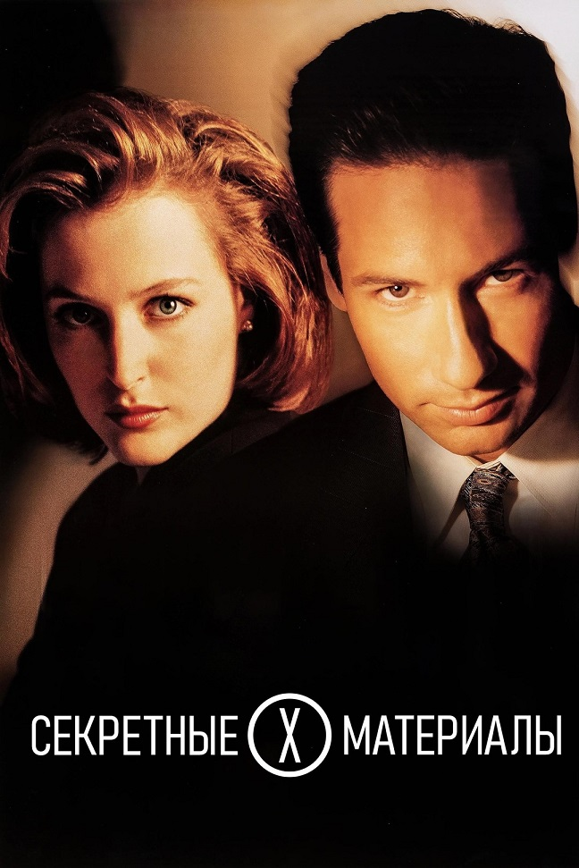

Мои любимые фильмы и сериалы
- Секретные материалы
 Большой куш
Джентльмены

- 12 разгневанных мужчин

Один из моих любимых мультфильмов:
⠀⠀⠀⠀⠀⠀⠀⠀⠀⠀⠀⠀⠀⠀⠀⢠⠶⣤⣄⣠⢤⣄⣤⢤⣄⡀⠀⠀⠀⠀⠀⠀⠀⠀⠀⠀⠀⠀⠀⠀⠀⠀⠀⠀⠀⠀⠀⠀⠀⠀ ⠀⠀⠀⠀⠀⠀⠀⠀⠀⠀⠀⠀⠀⠀⢠⣿⣼⣾⠛⠛⠲⣼⣷⡘⠿⢿⡏⣉⡓⠶⢤⣤⢤⣀⡀⠀⠀⠀⠀⠀⠀⠀⠀⠀⠀⠀⠀⠀⠀⠀ ⠀⠀⠀⠀⠀⠀⠀⠀⠀⠀⠀⠀⠀⣴⠿⠾⠟⠁⣤⣄⣀⣀⡀⠙⠓⠚⠷⡽⢿⣷⢀⣰⢿⣫⠿⠭⠟⠳⡆⠀⠀⠀⠀⠀⠀⠀⠀⠀⠀⠀ ⠀⠀⠀⠀⠀⠀⠀⠀⠀⠀⣴⠦⣀⠈⣿⣶⡦⢤⣬⣉⣁⣛⣋⣀⣀⡀⠀⣶⣶⣌⠉⡿⠉⣽⣤⡀⠀⠸⣇⠀⠀⠀⠀⠀⠀⠀⠀⠀⠀⠀ ⠀⠀⠀⠀⠀⠀⠀⠀⠀⠀⠘⢦⡈⠻⣿⠛⠃⣸⢻⣿⡗⠀⢸⠀⠉⠁⠀⠈⠛⠋⠀⣧⢸⣿⣿⣿⡄⠀⢹⡀⠀⠀⠀⠀⠀⠀⠀⠀⠀⠀ ⠀⠀⠀⠀⠀⠀⠀⠀⢀⣀⣀⡴⠛⠛⠛⠛⠿⠿⣦⣉⣀⣠⡾⠆⠀⠀⠀⠀⠀⠀⠀⣿⠀⠻⣿⡿⠁⠀⣼⠀⠀⠀⠀⠀⠀⠀⠀⠀⠀⠀ ⠀⠀⠀⠀⠀⠀⣴⠚⡹⠴⣶⠟⠛⠛⠛⢳⡶⠲⢤⣙⠣⣅⠓⢩⠀⠀⠀⠀⠀⠀⠀⠻⣄⣀⠀⠰⣶⣦⣿⡄⠀⠀⠀⠀⠀⠀⠀⠀⠀⠀ ⠀⠀⠀⠀⠀⠀⢧⡈⠳⠤⠿⠤⠤⠤⠤⠚⠓⠒⠒⠚⠳⠬⠳⡀⢠⣤⣄⠀⠀⠀⠀⢠⠏⣏⠉⠙⠻⢿⣁⡇⠀⠀⠀⠀⠀⠀⠀⠀⠀⠀ ⠀⠀⠀⠀⠀⠀⠀⠈⣙⣶⡖⠒⠂⠀⠀⠀⠀⠀⠀⠀⠀⠦⢤⠷⠈⠉⠁⠀⠀⠀⠀⠘⣦⠈⣧⡈⠙⠲⢌⡑⢤⡀⠀⠀⠀⠀⠀⠀⠀⠀ ⣀⣀⡀⠀⣀⠤⠒⣋⡥⠔⢧⠀⠀⠀⠀⠀⠀⠀⠀⠀⠀⠀⡼⠀⠀⠀⠀⠀⠀⠀⠀⠀⣼⠀⢿⣿⡆⠀⠀⡟⠒⢬⡓⢤⡀⠀⠀⠀⠀⠀ ⠀⣀⣈⠉⣤⡖⠋⠀⠀⠀⠀⠳⣄⠀⠀⠀⠀⠀⠀⠀⢀⡼⠁⠀⠀⠀⠀⢀⣤⣤⡀⠀⢹⡄⠀⠈⢀⣀⠀⢷⠀⠀⠈⠳⢍⠲⣄⠀⠀⠀ ⠉⠀⠈⠙⡇⢹⠀⠀⠀⠀⠀⠀⠈⣹⣶⠤⠤⢤⣤⣶⣯⣤⣄⣀⣀⣀⣀⠈⠻⡿⠋⠀⢰⠇⠀⢀⣈⣿⡧⣼⠀⠀⠀⠀⡠⠽⡞⠓⠢⢤ ⠀⠀⠀⠀⠻⠾⠀⠀⠀⠀⠀⠀⠰⣏⣭⡀⢰⣿⣿⣿⣿⣿⣿⠀⠀⠀⠈⠉⠉⣩⣍⠉⢻⡏⢉⣅⡀⠀⠀⢸⡄⠀⠀⡞⣰⠊⠉⠳⡄⢰ ⠀⠀⠀⠀⠀⠀⠀⠀⠀⢀⡠⠔⣫⠵⠛⠙⠒⣾⣿⣿⣿⣿⣿⠦⢤⣀⣀⣀⣠⣿⡋⠀⣰⢃⣈⣛⣁⡤⠤⠼⠃⠀⠀⠉⠉⠀⠀⠀⠸⡌ ⠀⠀⠀⣠⣤⠤⠖⠒⠊⠁⡖⠉⠀⠀⠀⠀⠸⣿⣿⣿⣿⣿⣿⠀⠀⠀⠈⠀⠀⠀⠉⠉⠉⠉⠙⢮⠻⣄ ⠀⠀⠀⠀⠀⠀⠀⠀⠀⢧ ⠀⠀⠀⢿⡿⠦⠔⠒⠒⠚⠁⠀⠀⠀⠀⠀⠀⠀⠀⠉⠉⠉⠁⠀⠀⠀⠀⠀⠀⠀⠀⠀⠀⠀⠀⢀⡱⠈⠓⠤⣀⣀⡀⠀⠀⠀⠀⠀⠀⠀ ⠀⠀⠀⠀⠀⠀⠀⠀⠀⠀⠀⠀⠀⠀⠀⠀⠀⠀⠀⠀⠀⠀⠀⠀⠀⠀⠀⠀⠀⠀⠀⠀⠀⠀⠀⠈⠓⠦⠤⣄⣀⣨⣿⡷⠀⠀⠀⠀⠀⠀ ⠀⠀⠀⠀⠀⠀⠀⠀⠀⠀⠀⠀⠀⠀⠀⠀⠀⠀⠀⠀⠀⠀⠀⠀⠀⠀⠀⠀⠀⠀⠀⠀⠀⠀⠀⠀⠀⠀⠀⠀⠀⠉⠛⠀⠀⠀⠀⠀⠀⠀